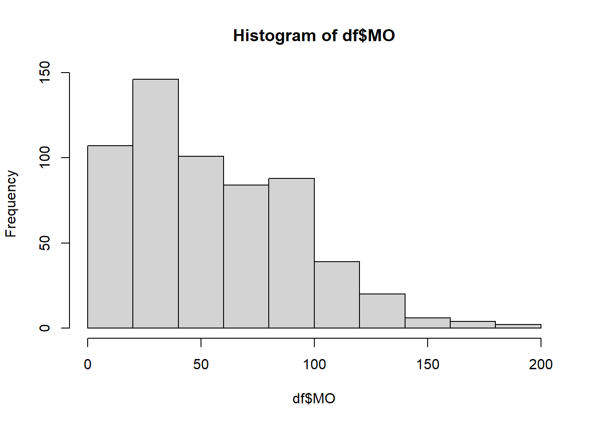
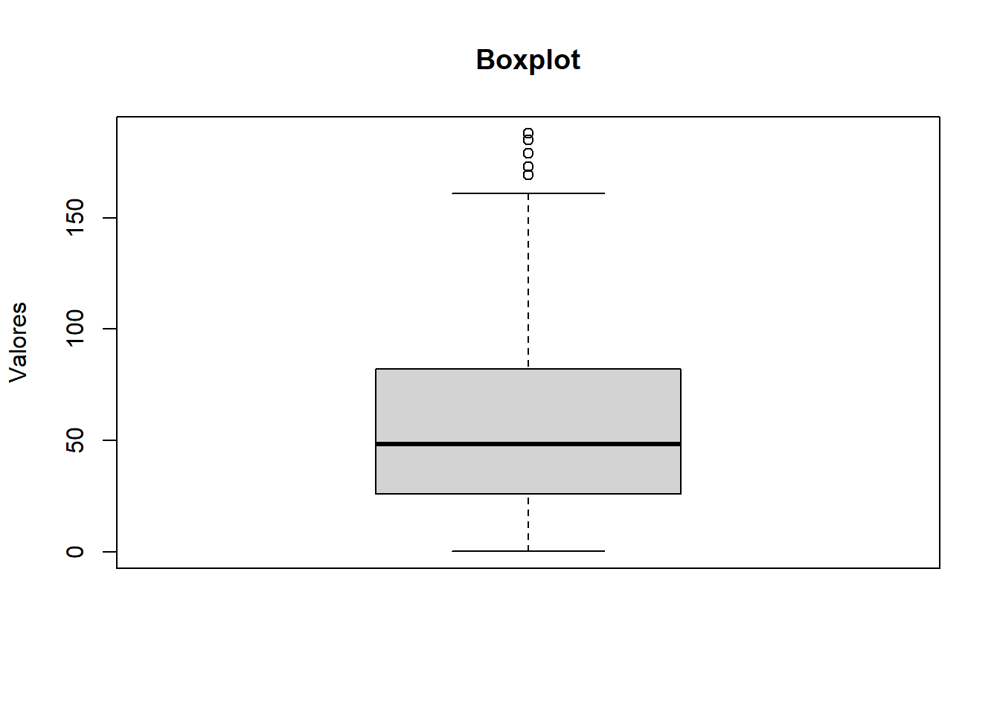
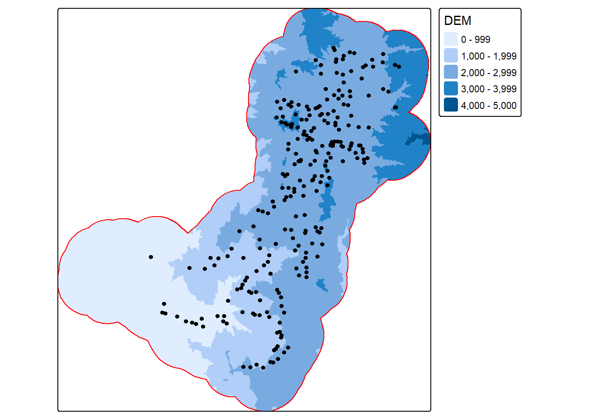

#Para el spline de profundidad se usa la librería mpspline2 (disponible en CRAN). Si no la tiene, instálela con:
#install.packages("mpspline2")
library(readxl)
library(sf)
library(dplyr)
library(ggplot2)
library(readxl)
library(Hmisc)
library(tmap)
library(mpspline2)
library(readxl)
library(raster)
library(pastecs)12 Limpieza, procesamiento y análisis exploratorio de datos de campo
Luego de haber realizado el muestreo en campo y tener los resultados de los análisis corrrespondientes a los factores de interés. Se procede a limpiar los datos de acuerdo a los estándares definidos.
12.1 Limpieza de valores nulos
En el proceso de transcripción de los datos suele presentar errores en los datos obtenidos en campo y luego pueden alterar el análisis que se realice. Es importante resaltar que de aquí en adelante es crucial el conocimiento de la persona que esté mapeando; el criterio y la experiencia permiten que la interpetación y edición de los datos tengan éxito.
Primero se deben haber definido unas estándares previos que resuelvan: qué datos son necesarios en el muestreo, qué unidades se van a utilizar, quiénes tomaron los datos y con qué métodos. Esto se vuelve necesario para saber a qué fuentes acudir cuándo los datos presenten muchas confusiones.
Importación de datos
Se importan los datos del muestreo en R utilizando las funciones adecuadas según el formato que tengan los datos (por ejemplo, read.csv() para archivos CSV, read_excel() para archivos Excel, etc.).
NoteLibrerías y datos
puntos_AOI= st_read("datos/cap12/puntos_final.gpkg", quiet = TRUE)
dataframe = as.data.frame(puntos_AOI)
dataset = read_excel("datos/cap12/datos_suelo_EC.xlsx")df= data.frame(dataset) %>% type.convert(na.strings = "NA", as.is = TRUE)
df$PDIS %>% pastecs::stat.desc() nbr.val nbr.null nbr.na min max range
597.0000000 0.0000000 430.0000000 0.0200000 146.2000000 146.1800000
sum median mean SE.mean CI.mean.0.95 var
4682.4900000 2.8600000 7.8433668 0.6123515 1.2026292 223.8597126
std.dev coef.var
14.9619421 1.9075918 Seleccionar columnas relevantes
También se puede hacer un set aparte, seleccionando solo las columnas de interés. Donde se debe especificar que columnas se quieren conservar en lugar de eliminar las que no se necesitan:
NoteSeleccionar variables
df= df[c('ID', 'CORX', 'CORY', 'ARENA', 'LIMO', 'ARCILLA', 'MO', 'CO', 'LIMSUP', 'LIMINF', 'PHAQ')]
df= na.omit(df)Se realiza una visualización reducida de los datos, para tener una idea de los datos recolectados.
NoteVisualizar datos
head(df) ID CORX CORY ARENA LIMO ARCILLA MO CO LIMSUP LIMINF PHAQ
1 2570 692255 9792525 32.00 60.0 8.00 25.6 14.80 0 25 5.80
3 2571 693375 9792623 12.00 38.0 50.00 56.4 32.70 0 15 5.70
4 2571 693375 9792623 14.00 32.0 54.00 21.8 12.60 15 35 6.00
5 2571 693375 9792623 28.00 24.0 48.00 4.5 2.60 35 100 5.90
6 6044 719140 9822091 53.54 22.4 24.06 12.8 7.43 0 20 7.02
7 6044 719140 9822091 71.54 14.4 14.06 6.0 3.48 20 50 7.00Visión general de los datos
La función skim() del paquete skimr, sirve para obtener una visión general de las distribución de los datos en el dataframe.
NoteCódigo
skim_df = skimr::skim(df)
skim_df| Name | df |
| Number of rows | 597 |
| Number of columns | 11 |
| _______________________ | |
| Column type frequency: | |
| numeric | 11 |
| ________________________ | |
| Group variables | None |
Variable type: numeric
| skim_variable | n_missing | complete_rate | mean | sd | p0 | p25 | p50 | p75 | p100 | hist |
|---|---|---|---|---|---|---|---|---|---|---|
| ID | 0 | 1 | 6544.90 | 963.93 | 2570.00 | 6252.00 | 6339.00 | 6417.00 | 9982.00 | ▁▁▇▁▁ |
| CORX | 0 | 1 | 713737.59 | 6752.44 | 692255.00 | 710244.00 | 714355.00 | 718367.00 | 728318.00 | ▁▂▆▇▂ |
| CORY | 0 | 1 | 9801615.11 | 12410.87 | 9777022.00 | 9790992.00 | 9804369.00 | 9811640.00 | 9822091.00 | ▅▅▅▇▅ |
| ARENA | 0 | 1 | 44.09 | 18.38 | 3.18 | 30.28 | 43.44 | 57.18 | 87.94 | ▂▇▇▅▂ |
| LIMO | 0 | 1 | 29.00 | 9.40 | 2.00 | 23.26 | 29.26 | 34.86 | 68.76 | ▂▆▇▁▁ |
| ARCILLA | 0 | 1 | 26.91 | 16.03 | 3.04 | 14.82 | 20.36 | 38.36 | 78.46 | ▇▅▃▂▁ |
| MO | 0 | 1 | 55.39 | 36.97 | 0.30 | 26.10 | 48.40 | 82.10 | 187.80 | ▇▆▅▁▁ |
| CO | 0 | 1 | 32.13 | 21.44 | 0.17 | 15.14 | 28.07 | 47.62 | 108.93 | ▇▆▅▁▁ |
| LIMSUP | 0 | 1 | 23.11 | 27.28 | 0.00 | 0.00 | 20.00 | 35.00 | 130.00 | ▇▃▁▁▁ |
| LIMINF | 0 | 1 | 57.76 | 35.31 | 8.00 | 30.00 | 50.00 | 80.00 | 160.00 | ▇▅▃▂▁ |
| PHAQ | 0 | 1 | 6.69 | 0.31 | 5.70 | 6.48 | 6.69 | 6.88 | 7.93 | ▁▅▇▂▁ |
12.2 Estandarización de valores y unidades
En los procesos de transcripción, cálculos en campo, estimaciones y demás, se puede presentar modificación en los datos lo que aumenta los errores en el estudio. Se procede a filtrar los datos que se salgan de la normalidad de cada variable y es necesario definir si fueron errores de cálculo de tipeo. Para esto se debe ubicar en cada variable esos valores y transformarlos o eliminarlos si es el caso:
Conversión de unidades
Algunos valores pueden estar en unidades diferentes. Luego de filtrarlos se deben convertir a una unidad común, esto se realiza utilizando factores de conversión:
NoteConvertir unidades
# Conversión de unidades
df$DA = df$ARCILLA / 10
head(df) ID CORX CORY ARENA LIMO ARCILLA MO CO LIMSUP LIMINF PHAQ DA
1 2570 692255 9792525 32.00 60.0 8.00 25.6 14.80 0 25 5.80 0.800
3 2571 693375 9792623 12.00 38.0 50.00 56.4 32.70 0 15 5.70 5.000
4 2571 693375 9792623 14.00 32.0 54.00 21.8 12.60 15 35 6.00 5.400
5 2571 693375 9792623 28.00 24.0 48.00 4.5 2.60 35 100 5.90 4.800
6 6044 719140 9822091 53.54 22.4 24.06 12.8 7.43 0 20 7.02 2.406
7 6044 719140 9822091 71.54 14.4 14.06 6.0 3.48 20 50 7.00 1.406También se pueden generar nuevas columnas con la información derivada de algunos datos tomados en campo:
NoteAgregar cálculos
# Crear nueva columna con el resultado de la multiplicación
Carbono = df$MO / df$CO
df$Carbono = Carbono
# Ver el dataframe resultante
head(df) ID CORX CORY ARENA LIMO ARCILLA MO CO LIMSUP LIMINF PHAQ DA
1 2570 692255 9792525 32.00 60.0 8.00 25.6 14.80 0 25 5.80 0.800
3 2571 693375 9792623 12.00 38.0 50.00 56.4 32.70 0 15 5.70 5.000
4 2571 693375 9792623 14.00 32.0 54.00 21.8 12.60 15 35 6.00 5.400
5 2571 693375 9792623 28.00 24.0 48.00 4.5 2.60 35 100 5.90 4.800
6 6044 719140 9822091 53.54 22.4 24.06 12.8 7.43 0 20 7.02 2.406
7 6044 719140 9822091 71.54 14.4 14.06 6.0 3.48 20 50 7.00 1.406
Carbono
1 1.729730
3 1.724771
4 1.730159
5 1.730769
6 1.722746
7 1.72413813 Exploración de datos de campo
El análisis exploratorio de datos (EDA, por sus siglas en inglés de Exploratory Data Analysis) corresponde a la fase de análisis de datos donde se busca entender, visualizar y resumir el comportamiento del conjunto de los datos.
Este análisis resulta en una identificación de patrones, valores atípicos y nulos. Además permite formular hipótesis que pueden ser útiles para el análisis posterior y la toma de decisiones.
Se debe cargar la información en un formato que permita su manipulación estadística y gráfica, se recomienda utilizar archivos en formato data.frame
13.1 Análisis estadístico
En el análisis estadístico se incluye la recolección, organización e interpretación de los datos. Se aplican distintos métodos estadísticos para analizar y entender los datos. Se pueden utilizar las funciones específicas para obtener los valores de la media, mediana, moda, desviación estándar, varianza, simetría de los datos, entre otros.
Descripción de datos
Se obtiene información general del tipo y la cantidad de datos que se tiene:
NoteTipos de datos
str(df)'data.frame': 597 obs. of 13 variables:
$ ID : int 2570 2571 2571 2571 6044 6044 6045 6045 6045 6048 ...
$ CORX : int 692255 693375 693375 693375 719140 719140 719263 719263 719263 721384 ...
$ CORY : int 9792525 9792623 9792623 9792623 9822091 9822091 9821812 9821812 9821812 9816013 ...
$ ARENA : num 32 12 14 28 53.5 ...
$ LIMO : num 60 38 32 24 22.4 ...
$ ARCILLA: num 8 50 54 48 24.1 ...
$ MO : num 25.6 56.4 21.8 4.5 12.8 6 30.5 26.6 5.7 32.3 ...
$ CO : num 14.8 32.7 12.6 2.6 7.43 ...
$ LIMSUP : int 0 0 15 35 0 20 0 25 60 0 ...
$ LIMINF : int 25 15 35 100 20 50 25 60 140 25 ...
$ PHAQ : num 5.8 5.7 6 5.9 7.02 7 7.93 7.29 7.54 6.99 ...
$ DA : num 0.8 5 5.4 4.8 2.41 ...
$ Carbono: num 1.73 1.72 1.73 1.73 1.72 ...
- attr(*, "na.action")= 'omit' Named int [1:430] 2 8 9 15 16 19 20 23 24 27 ...
..- attr(*, "names")= chr [1:430] "2" "8" "9" "15" ...Luego se utilizan medidas descriptivas como la media, la mediana, la moda, la desviación estándar y varianza, para resumir y describir las características principales de los datos.
NoteMedidas descriptivas
summary(df) ID CORX CORY ARENA
Min. :2570 Min. :692255 Min. :9777022 Min. : 3.18
1st Qu.:6252 1st Qu.:710244 1st Qu.:9790992 1st Qu.:30.28
Median :6339 Median :714355 Median :9804369 Median :43.44
Mean :6545 Mean :713738 Mean :9801615 Mean :44.09
3rd Qu.:6417 3rd Qu.:718367 3rd Qu.:9811640 3rd Qu.:57.18
Max. :9982 Max. :728318 Max. :9822091 Max. :87.94
LIMO ARCILLA MO CO
Min. : 2.00 Min. : 3.04 Min. : 0.30 Min. : 0.17
1st Qu.:23.26 1st Qu.:14.82 1st Qu.: 26.10 1st Qu.: 15.14
Median :29.26 Median :20.36 Median : 48.40 Median : 28.07
Mean :29.00 Mean :26.91 Mean : 55.39 Mean : 32.13
3rd Qu.:34.86 3rd Qu.:38.36 3rd Qu.: 82.10 3rd Qu.: 47.62
Max. :68.76 Max. :78.46 Max. :187.80 Max. :108.93
LIMSUP LIMINF PHAQ DA
Min. : 0.00 Min. : 8.00 Min. :5.700 Min. :0.304
1st Qu.: 0.00 1st Qu.: 30.00 1st Qu.:6.480 1st Qu.:1.482
Median : 20.00 Median : 50.00 Median :6.690 Median :2.036
Mean : 23.11 Mean : 57.76 Mean :6.689 Mean :2.691
3rd Qu.: 35.00 3rd Qu.: 80.00 3rd Qu.:6.880 3rd Qu.:3.836
Max. :130.00 Max. :160.00 Max. :7.930 Max. :7.846
Carbono
Min. :1.717
1st Qu.:1.724
Median :1.724
Mean :1.724
3rd Qu.:1.724
Max. :1.765
NoteDesviación estándar
a= sd(df$MO)
a[1] 36.97048Una libreria más completa para describir estadisticamente los datos es Pastecs
NoteEDA completo
stat.desc(df) ID CORX CORY ARENA LIMO
nbr.val 5.970000e+02 5.970000e+02 5.970000e+02 5.970000e+02 5.970000e+02
nbr.null 0.000000e+00 0.000000e+00 0.000000e+00 0.000000e+00 0.000000e+00
nbr.na 0.000000e+00 0.000000e+00 0.000000e+00 0.000000e+00 0.000000e+00
min 2.570000e+03 6.922550e+05 9.777022e+06 3.180000e+00 2.000000e+00
max 9.982000e+03 7.283180e+05 9.822091e+06 8.794000e+01 6.876000e+01
range 7.412000e+03 3.606300e+04 4.506900e+04 8.476000e+01 6.676000e+01
sum 3.907303e+06 4.261013e+08 5.851564e+09 2.632052e+04 1.731206e+04
median 6.339000e+03 7.143550e+05 9.804369e+06 4.344000e+01 2.926000e+01
mean 6.544896e+03 7.137376e+05 9.801615e+06 4.408797e+01 2.899843e+01
SE.mean 3.945115e+01 2.763591e+02 5.079431e+02 7.523193e-01 3.848066e-01
CI.mean.0.95 7.748018e+01 5.427560e+02 9.975759e+02 1.477519e+00 7.557418e-01
var 9.291668e+05 4.559548e+07 1.540297e+08 3.378927e+02 8.840144e+01
std.dev 9.639330e+02 6.752443e+03 1.241087e+04 1.838186e+01 9.402204e+00
coef.var 1.472801e-01 9.460680e-03 1.266207e-03 4.169359e-01 3.242315e-01
ARCILLA MO CO LIMSUP LIMINF
nbr.val 5.970000e+02 5.970000e+02 5.970000e+02 597.000000 5.970000e+02
nbr.null 0.000000e+00 0.000000e+00 0.000000e+00 245.000000 0.000000e+00
nbr.na 0.000000e+00 0.000000e+00 0.000000e+00 0.000000 0.000000e+00
min 3.040000e+00 3.000000e-01 1.700000e-01 0.000000 8.000000e+00
max 7.846000e+01 1.878000e+02 1.089300e+02 130.000000 1.600000e+02
range 7.542000e+01 1.875000e+02 1.087600e+02 130.000000 1.520000e+02
sum 1.606742e+04 3.306906e+04 1.918180e+04 13795.000000 3.448000e+04
median 2.036000e+01 4.840000e+01 2.807000e+01 20.000000 5.000000e+01
mean 2.691360e+01 5.539206e+01 3.213032e+01 23.107203 5.775544e+01
SE.mean 6.561680e-01 1.513101e+00 8.776759e-01 1.116464 1.444949e+00
CI.mean.0.95 1.288683e+00 2.971658e+00 1.723714e+00 2.192683 2.837812e+00
var 2.570422e+02 1.366816e+03 4.598780e+02 744.156274 1.246464e+03
std.dev 1.603254e+01 3.697048e+01 2.144477e+01 27.279228 3.530529e+01
coef.var 5.957039e-01 6.674328e-01 6.674309e-01 1.180551 6.112894e-01
PHAQ DA Carbono
nbr.val 5.970000e+02 597.0000000 5.970000e+02
nbr.null 0.000000e+00 0.0000000 0.000000e+00
nbr.na 0.000000e+00 0.0000000 0.000000e+00
min 5.700000e+00 0.3040000 1.717172e+00
max 7.930000e+00 7.8460000 1.764706e+00
range 2.230000e+00 7.5420000 4.753417e-02
sum 3.993600e+03 1606.7420000 1.029239e+03
median 6.690000e+00 2.0360000 1.723971e+00
mean 6.689447e+00 2.6913601 1.724019e+00
SE.mean 1.277269e-02 0.0656168 7.497567e-05
CI.mean.0.95 2.508495e-02 0.1288683 1.472486e-04
var 9.739550e-02 2.5704221 3.355946e-06
std.dev 3.120825e-01 1.6032536 1.831924e-03
coef.var 4.665296e-02 0.5957039 1.062590e-0313.2 Análisis gráfico
Histograma
Una forma útil de explorar las variables numéricas es con histogramas. Estos podemos hacerlos con el comando hist(), donde ponemos como argumento el nombre del dataframe seguido de $ y el nombre de la variable que queremos graficar.
NoteHistograma
hist(df$MO )
Boxplot
Un diagrama de caja y bigotes, también conocido como boxplot, es un gráfico que representa un conjunto de datos estadísticos de manera visual utilizando los cuartiles, también se muestra la dispersión de una serie de datos de forma rápida y eficiente.
Aquellos valores que sobrepasan los límites superior e inferior son los que se conocen como valores atípicos (outliers).
NoteBoxplot
# Trazar un boxplot de los datos
boxplot(df$MO, main = "Boxplot", ylab = "Valores")
EDA Automático
Pero hay una forma más eficiente de realizar este proceso, mediante librerías que realizan el EDA de forma automática y generando informes detallados para acelerar el proceso de exploración de un nuevo conjunto de datos.
Los tres paquetes de R ( DataMaid , DataExplorer y SmartEDA ) son muy eficaces para realizar EDA en un conjunto de datos determinado y los científicos de datos de una organización pueden considerar su implementación.
NoteSmartEDA
Al correr la siguiente linea se creará un archivo HTML con un reporte estadistico automatico de los datos
#library(SmartEDA)
#ExpReport(df,op_file='EDA_Ecuador.html')13.3 Equal- area spline
El Equal - area spline también conocido como spline de suavizado cuadrático de áreas iguales, es un tipo específico de función spline que es utilizada en diversos campos, particularmente en la ciencia del suelo y los estudios ambientales.
Esta función matemática ajusta una curva suave a través de una serie de puntos de datos, conservando al mismo tiempo el área total bajo los datos originales y la curva ajustada. Lo que facilita el análisis y modelamiento en funciones de profundidad continuas, como la variación de las propiedades del suelo (carbono orgánico, pH) u otras variables ambientales a diferentes profundidades.
Al suavizar dichas fluctuaciones de los datos, el spline proporciona una representación más interpretable e informativa de la tendencia subyacente.
13.3.1 Librería mpspline2
Para realizar el Spline en R, se utiliza la librería mpspline2, mediante la función mpspline(), la cual ajusta la función y preserva la masa (picnofiláctica) a datos de perfil de suelo. La función toma un data.frame con el identificador del perfil, la profundidad superior, la profundidad inferior y la propiedad, y devuelve los valores estimados para las profundidades estándar definidas.
Nota: la versión original de este capítulo usaba la función
ea_spline()de la libreríaithir, que ya no se puede instalar.mpspline2implementa el mismo método (equal-area spline, Bishop et al., 1999).
NoteSpline
#Se filtran los valores que están en profundidades menores a 30 para excluir los datos del proceso
df_lower_30 = df %>% group_by(ID) %>% summarise(LIMINF = max(LIMINF)) %>% filter(LIMINF < 29)
df = df[!(df$ID %in% df_lower_30$ID), ]
#Se definen las variables donde se encuentran los datos de interés y se define la profundidad estándar y la propiedad a obtener
lon = df$CORX
lat = df$CORY
id = df$ID
top = df$LIMSUP
bottom = df$LIMINF
stand_depth = c(0,30)
Propiedad = df$MO
#Se crea un dataset con el perfil: identificador, profundidad superior, profundidad inferior y propiedad
prof1 <- data.frame(id, top, bottom, Propiedad)
#Con esta función se realiza el spline de la propiedad definida previamente
Propiedad_spline <- mpspline(prof1, var_name = "Propiedad", lam = 0.1, d = stand_depth)Site 9627 only has data for one depth range and was not splined.Site 9964 only has data for one depth range and was not splined.Site 9965 only has data for one depth range and was not splined.#Se guardan los datos obtenidos: identificador del perfil y valor estimado de 0 a 30 cm
datos <- data.frame(
id = names(Propiedad_spline),
X0.30.cm = vapply(Propiedad_spline, function(x) if (length(x$est_dcm)) unname(x$est_dcm[1]) else NA_real_, numeric(1))
)
head(datos) id X0.30.cm
2571 2571 41.50709
6044 6044 11.36563
6045 6045 30.40786
6048 6048 31.25905
6083 6083 26.70257
6084 6084 39.60385#Se crea un dataframe con los datos obtenidos en el spline
datos= data.frame(lapply(datos, type.convert,as.is = TRUE))
#Se separan las coordenadas de cada punto, diferenciada por el ID
coord= df[,1:3] %>% unique(by = "ID")
# Se crea un nuevo vector de nombres
nuevos_nombres = c("id", "lon", "lat")
# Luego se asignan los nuevos nombres al dataframe
names(coord) = nuevos_nombres
#Se unen los datos de MO para cada punto y se le agrega su coordenada mediante el ID
data_final=right_join(datos,coord, by= "id")
# Se crea un objeto shapefile a partir del dataframe
datos_spline_sf <- st_as_sf(data_final, coords = c("lon", "lat"), crs = 32717) #Se especifíca el sistema de referencia de coordenadas (CRS) según los datos
#Se cargan los datos del ráster y el buffer de las covariables
Buffer = st_read("datos/cap12/buffer_300m_rasterizado.gpkg", quiet = TRUE)
DEM = raster("datos/covariables/DEM.tif")
#Se grafican los valores del spline dentro del DEM
tm_view("view")[nothing to show] no data layers definedtm_shape(DEM) +
tm_raster() +
tm_shape(datos_spline_sf) +
tm_dots("X0.30.cm", palette = "-RdYlBu") +
tm_shape(Buffer) +
tm_borders(col = "red")
── tmap v3 code detected ───────────────────────────────────────────────────────
[v3->v4] `tm_tm_dots()`: migrate the argument(s) related to the scale of the
map variable `fill` namely 'palette' (rename to 'values') to fill.scale =
tm_scale(<HERE>).
# Se guarda el objeto como un archivo shapefile
st_write(datos_spline_sf, "salidas/spline.gpkg", delete_layer = TRUE)Deleting layer `spline' using driver `GPKG'
Writing layer `spline' to data source `salidas/spline.gpkg' using driver `GPKG'
Writing 248 features with 2 fields and geometry type Point.13.4 Ejercicio de recopilación
Las muestras tomadas en campo son analizadas en el laboratorio y posteriormente se obtienen los resultados.
- Convierta los puntos seleccionamos previamente en un dataframe.
- Realiza un EDA para entender un poco el comportamiento de estos datos.
- Seleccione la variable de su interés, la cuál utilizará para realizar el mapeo.
- Calcula los valores de spline si es necesario.